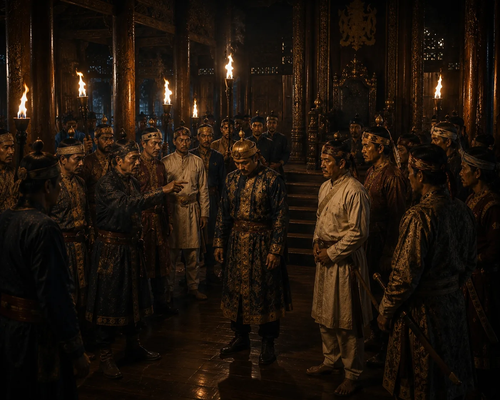

Assassination of King Tyao Khamti
1389 · The coming of Sukaphaa

Disgusted by Tyao Khamti's acquiescence in the murder of his innocent queen and arbitrary rule, nobles and citizens revolt and assassinate the king.
Sources have not yet been catalogued for this record.
People: Tyao Khamti
Open this scene in the interactive archive · Follow this event on MAP